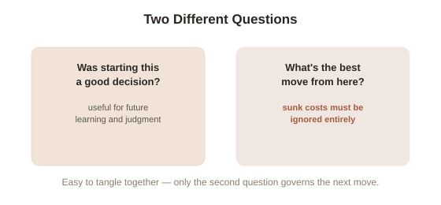

Chapter 6: The Sunk Cost Rule
Chapter 2's workshop example depended on a specific claim: the $10,000 already spent on setup was irrelevant to whether the next order was worth taking. This chapter states that claim as a formal rule, and works through why it's so consistently hard to actually follow, even once it's fully understood.
The rule, stated precisely
A sunk cost is money, time, or effort already spent that cannot be recovered regardless of what's decided next. The formal decision rule in managerial economics is unambiguous: sunk costs should play no role whatsoever in a forward-looking decision. Only the costs and benefits that change depending on what's chosen next — the marginal costs and marginal benefits from Chapter 2 — belong in the calculation. This is a purely logical point, not a psychological one: the $10,000 is gone whether the next order is accepted or declined, so it literally cannot be affected by, and therefore cannot rationally influence, that decision.
Why this is so hard to actually do
Almost everyone agrees with the rule in the abstract, and almost everyone still violates it in practice — continuing to fund a struggling project because of how much has already gone into it, finishing a bad meal because it was already paid for, staying in a length of a movie or a book because of the time already invested. The mechanism isn't stupidity; it's that sunk costs get psychologically entangled with a separate, real question — "was this a good decision to have made in the first place" — which does matter for learning and future judgment, but is a completely different question from "given where things stand right now, what's the best next move." Keeping those two questions cleanly separated is the actual skill: it's fine, even useful, to review whether starting the project was a mistake for future reference, while still correctly ignoring the money already spent when deciding whether to continue it right now.

A concrete test for whether you're actually following the rule
A reliable practical test: would this decision look any different to someone with the exact same options going forward, but who hadn't already spent anything on it? If a stranger, offered the exact same remaining choice with none of the history, would clearly walk away — and the only reason to continue is "but I've already put so much in" — that's the sunk-cost rule being violated in real time. This reframing works because it strips out the emotional weight of the money already spent and leaves only the forward-looking comparison that actually determines whether continuing is the right call.
Try this
Ideas for noticing or testing this in your own life.
- Apply the stranger test to one decision you're currently hesitant to walk away from — a subscription, a project, a course, a purchase — because of what's already been invested: would a stranger, handed the exact same remaining choice with none of your history, make the same call you're making?
Worth pulling on?
A few loose threads from this chapter — if any of these genuinely grab you, that's a good sign of where to go next.
- Every chapter so far has looked at a single decision-maker in isolation — but many real decisions involve deciding whether to do something yourself or bring someone else in. → Picked up directly in Chapter 7, on why organizations exist at all.